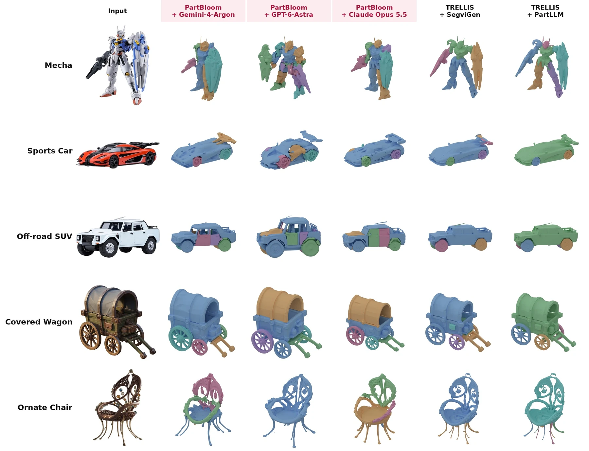
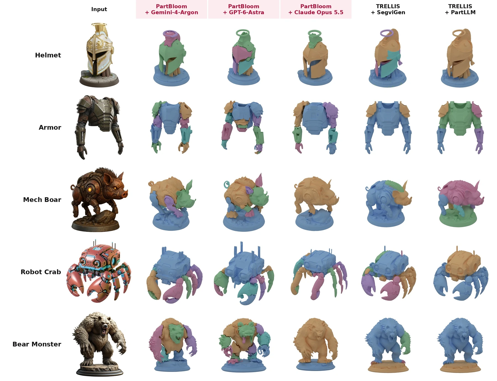
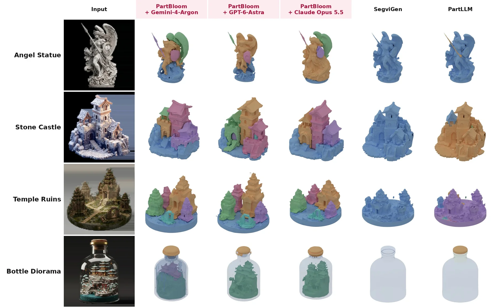

PartBloom is an open-source agentic framework for single-image 3D generation. An LLM agent plans the object's functional parts and builds them as a coarse voxel proxy with explicit drawing tools. A diffusion model (TRELLIS) then refines the proxy and decodes every part from one shared latent, so each part comes out as its own detailed, textured mesh that fits the rest of the object. The agent stage is model-agnostic; results here use Claude Opus 5.5, GPT-6-Astra and Gemini-4-Argon.
Results Comparison
Fourteen single-image inputs: vehicles, mecha, creatures, statues, furniture, architecture and dioramas. Click Load 3D on a row, then drag any cell to orbit. All cells in a row turn together. Switch between textured, part-colored and clay display, or choose which agent LLM drives PartBloom and Direct Blender. ⤢ opens a large viewer with an exploded view and the part list.
- PartBloom
- Ours. An LLM agent builds the part-level proxy and TRELLIS blooms the details.
- PhysX-Omni
- Its fine-tuned VLM predicts a voxel structure, which TRELLIS decodes (seed 1).
- Direct Blender
- The same agent LLM writes Blender Python directly (Claude Code, Codex, Antigravity CLI).
Part Decomposition
PartBloom generates parts natively. Each part is split by function and independent motion, and small fixed attachments stay with the part they belong to. We compare against dedicated 3D part-segmentation methods, SegviGen and PartLLM (general granularity), which split a finished asset after the fact. Colors mark parts. To explore our parts in 3D, use Parts mode or the exploded view above.



Rigging
Each output part is a functional, independently moving piece, so the assets can be rigged and animated directly.
Method
PartBloom works in two stages: the LLM agent fixes the structure, then the diffusion model fills in the detail.
Structure first
A Planner reads the image and decides the parts. A Builder constructs each part on one shared 64³ voxel canvas with polygon, brush, move and clear tools; the drawing tools can also erase. A Reviewer compares renders of the proxy with the image and can start up to two whole-object repair rounds. The agent talks to any LLM through protocol adapters, so switching providers is a config change.
Details bloom
The proxy surface is dilated into a thin support band and encoded by the TRELLIS sparse-structure VAE, partially noised (t = 0.65) and refined by 12 image-guided denoising steps (CFG 5). Part labels move to the refined structure, one structured latent is sampled for the whole object, and each part is decoded from its own slice, so parts stay consistent with each other. TRELLIS's Gaussian decoder and texture baking produce a textured GLB for every part.
Get Started
The full pipeline, prompts and configs are on GitHub. Setup steps are in the README.
# Full pipeline: agent coarse proxy → guided refinement → per-part decoding → textures
python partbloom/run.py run \
--image path/to/image.png \
--api-config my_api.json --model claude-opus-5-5 --reasoning-effort high \
--out outputs/my_asset --gpu 0Citation
@misc{partbloom2026,
title = {PartBloom: Structure First. Details Bloom.},
author = {Anonymous},
year = {2026},
howpublished = {\url{https://github.com/brain-labbb/PartBloom}}
}